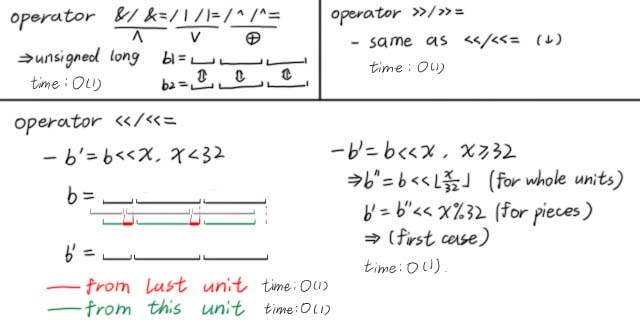

std::bitset及时间复杂度常数优化
本文最后更新于 2024年8月7日 晚上
写在前面
本文仅介绍了C++14版本下的特性和调用方法，仅供 $\text{OIer}$ 学习和参考使用。
具体怎么使用，哪些题、什么环境下使用，后面我会单独写一篇文章讲。在此之前，建议看一下大佬的博客，我会放在后面。
std::bitset
一种数据类型，可用于压二进制。
头文件
#include <bitset>
顺序
右侧为低位，左侧为高位，类似二进制数。
以bitset<6> b(22)为例：
$$
\begin{array}{|c|c|c|c|c|c|c|}
\hline \text{val}&0&1&0&1&1&0\\
\hline \text{id}&5&4&3&2&1&0\\
\hline
\end{array}
$$
构造
构造一个长度为 $N$ 的bitset。
bitset<N> b;
默认构造，所有位都为 $0$。
bitset<N> b(x);
从unsigned long long类型构造，最右、最低位有效。
有效长度为 $\min(N,64)$。若 $N<64$，则取 $x$ 的低 $N$ 位作为bitset的数据。
bitset<N> b(s);
从std::basic_string或const Char T*类型构造，最左、最高位有效。
有效长度位 $\min(N,len)$。若 $N<len$，则取字符串 $s$ 从左向右前 $N$ 位作为bitset的数据。
若 $s$ 中含有除“$0$”、“$1$”之外的字符，会在构造过程中报错。
值的获取
bool x=b[i];
直接获取下标为 $i$ 的位值，即从右向左第 $i-1$ 位。
bool x=b.test(i);
直接获取下标位 $i$ 的位值，但越界会报错。
bool x=b.all();
若 $b$ 中全部为 $1$，则返回 $1$，若存在 $0$ 则返回 $0$。
bool x=b.any();
若 $b$ 中存在 $1$，则返回 $1$，若全部为 $0$ 则返回 $0$。
bool x=b.none();
若 $b$ 中全部为 $0$，则返回 $1$，若存在 $1$ 则返回 $0$。
size_t x=b.count();
返回 $b$ 中 $1$ 的数量，即 $\text{popcount}$。
cout << b << '\n';
输出 $b$。从左到右，由高位到低位，下标由 $N-1$ 到 $0$。
值的修改
b[i]=x;
将下标为 $i$ 的位修改为 $0/1$。
b.set(i);
将下标为 $i$ 的位修改为 $1$。
b.reset(i);
将下标为 $i$ 的位修改为 $0$。
b.flip(i);
将下标为 $i$ 的位反转，从 $0$ 改成 $1$，从 $1$ 改成 $0$。
运算符
同二进制位运算，bitset提供了<<、<<=、>>、>>=、&、&=、|、|=、~等运算符。
位移产生的新位为 $0$。
注意，bitset仅能与bitset运算，不可与整型运算。
时间复杂度
对于整型
在现代CPU中，两个 $32$ 位无符号整型进行位运算的时间复杂度为 $O(1)$，而不是 $O(32)$。其原因有以下三点：
- 硬件支持：现代CPU的指令集通常包含专门的位运算指令，这些指令直接由硬件支持，执行速度非常快。
- 寄存器操作：位运算通常在CPU的寄存器之间进行，寄存器访问速度非常快，远快于内存访问。
- 编译器优化：现代编译器能够识别并优化位运算，生成高效的机器代码。
整型变量间单次位运算的时间复杂度为 $O(1)$，这是分析时间复杂度的大前提，也是bitset能优化时间复杂度的根本原因。
对于bitset
bitset的底层是unsigned long$32$ 位无符号整型变量，bitset间的位运算全部由底层的unsigned long实现。
bitset位运算的具体操作如下图所示。

这样，进行每一个unsigned long单位内位运算的时间复杂度为 $O(1)$；而长度为 $N$ 的bitset总共有 $\lceil\frac N{32}\rceil$ 个unsigned long单位，故整个bitset进行位运算的时间复杂度为 $O(\frac N{32})$。
这种记法不是很严谨。考虑到时间复杂度不应出现常数，应将其记为 $O(\frac Nw)$，其中位数 $w=32$。
当然，如果使用unsigned long long作为底层类型，常数能降至 $\frac1{64}$，但是需要手写。
博客链接 - bitset的应用
bitset 的妙用：乱搞字符串匹配 - 博客园-Alex_Wei
bitset的用法及例题(对DP过程的优化) - 博客园-yangtz
参考资料
std::bitset - cppreference
bitset - OI-Wiki